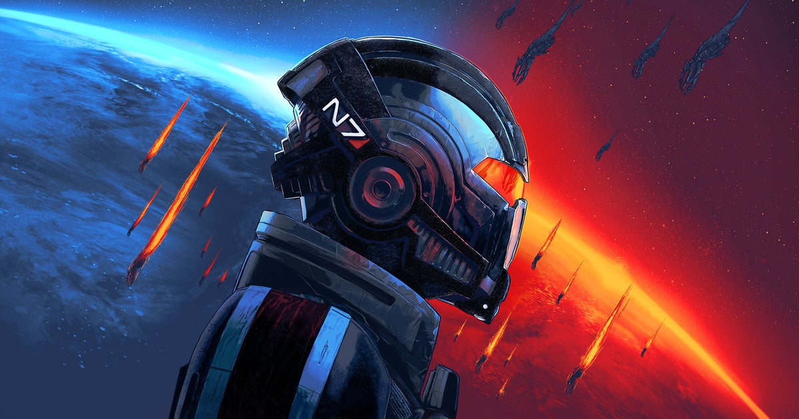

Gaming · 23 Oct 2026
Farewell BioWare, you inspired so many of us, and you deserved so much better than this

Oof. I expected this day to come but the news has left me winded nonetheless; BioWare, the creator of so many beloved role-playing series and games - Mass Effect , Dragon Age, Baldur's Gate , Star Wars: Knights of the Old Republic - has been closed. EA decided it had no place for it under its new Sa
Multiple independent publishers are reporting on the same development: Farewell BioWare, you inspired so many of us, and you deserved so much better than this.
The available reports place the development in the Gaming category. The accounts were compared for agreement on the central event rather than simply shared names or broad topics.
One of the available reports describes the development this way: Oof. I expected this day to come but the news has left me winded nonetheless; BioWare, the creator of so many beloved role-playing series and games - Mass Effect , Dragon Age, Baldur's Gate , Star Wars: Knights of the Old Republic - has been closed. EA decided it had no place for it under its new Saudi and private investment ownership . So Mass Effect 5 has been canned, and a studio that helped shape an industry and popularise role-playing games over the course of 31 years is no more. Read more
Readers should consult the linked source reports for additional context, updates and details that may change as the story develops.
Sources
This article was produced by the C. O. Eric AI Newsroom from the cited sources. It is published only after automated evidence and safety checks.